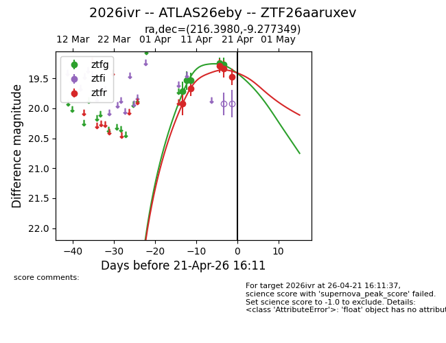
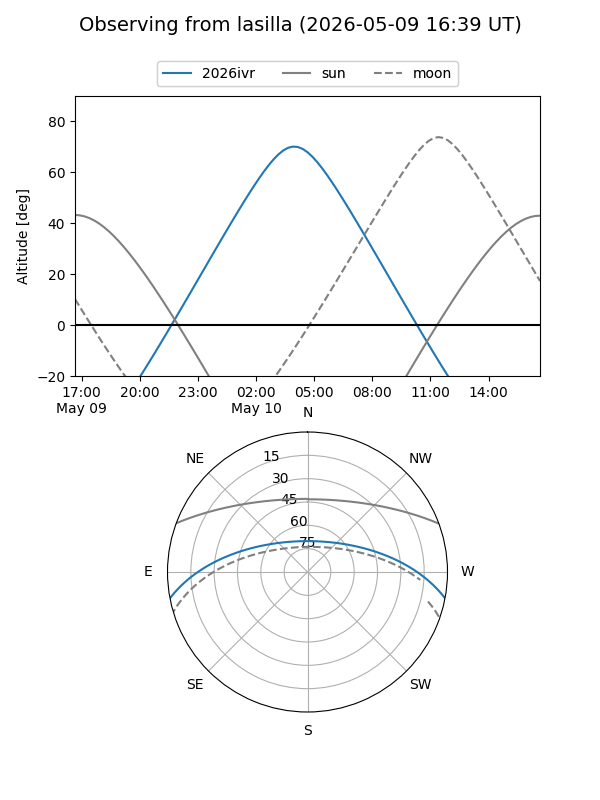
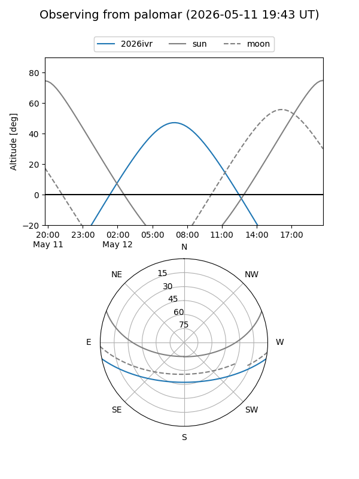
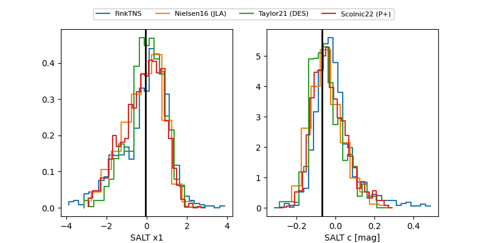

2026ivr
Target 2026ivr at 2026-04-21 16:15
Aliases and brokers:
FINK: link
Lasair: link
ALeRCE: link
TNS: link
YSE: link
alt names
ZTF26aaruxev (ztf,fink_ztf)
2026ivr (tns,yse)
ATLAS26eby (atlas)
Coordinates:
equatorial (ra, dec) = 216.3980,-9.27735
equatorial (HMS+DMS) = 14:25:35.52,-09:16:38.46
galactic (l, b) = (338.2618,+47.03331)
Flags:
Photometry:
last ztfg=19.27, ztfr=19.47
5 ztfg, 5 ztfr detections
Lightcurve

Visibility


Additional plots
